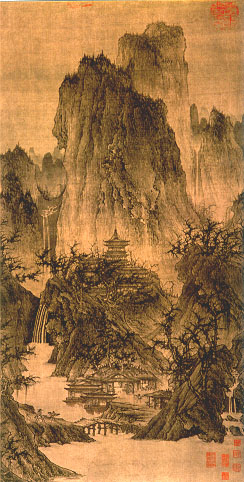

義助慰安婦 —— 李敖百件珍藏義賣藝術品（第46件） 品 名：C15. 李成「晴巒蕭寺圖」（印本）（附書） 預估價：2 萬 成交價：4 萬 說 明： 本件作品是日本二玄社印本，原件收藏在美國博物館；雖是印本，但卻是極少見值得珍藏的藝術品。作者是十世紀著名的北宋大畫家李成。《周越墨蹟研究──你不知道的故宮博物院》一書（李敖、陳兆基、王裕民合著）中，王裕民先生證明此作品上之圖章為南宋官印，推翻了原先專家所認定的北宋官印之說。 
本件作品是日本二玄社印本，原件收藏在美國博物館；雖是印本，但卻是極少見值得珍藏的藝術品。作者是十世紀著名的北宋大畫家李成。《周越墨蹟研究──你不知道的故宮博物院》一書（李敖、陳兆基、王裕民合著）中，王裕民先生證明此作品上之圖章為南宋官印，推翻了原先專家所認定的北宋官印之說。